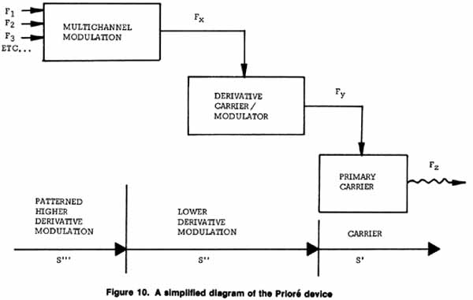

|
THE PRIORE MACHINE The
cure for cancer mentioned above is the Prioré device in France, which has
been curing cancer and other diseases for over a decade, much to the
frustration of many members of the French Academy of Sciences. |

| In other words, the Prioré device
produces a reverse sort of effect as compared with the Soviet work
reported by Kaznacheyev on anomalous death and disease transmission
between cell cultures by near ultraviolet biophotons emitted from the
virtual Popp field of the dying cells of the stressed, attacked
cultures. The same sort of virtual engineering that can transmit
death of the organism (by disrupting its mind-life-consciousness loop
tuning) can also transmit life into a stressed attacked grouping of
cells by a sort of "forced resonance" of their consciousness
loops into normal health patterns. (Virtual state interactions
control charges, which control chemistry. Thus the entire
chemistry of the absorbing cells can be controlled and engineered.)
Also, the Lisitsyn paper refers to the presence of eleven independent
channels in the brainwaves (namely, in the mind-life-consciousness
connection to the waves of dendrite firings that constitute
brainwaves*), and these were specifically referred to clipped signals,
not sine waves. (The clipped signals would be those possessing
complex nested modulations, and thus representing the tuning effects of
the life-consciousness loop.) The Prioré machine uses
seventeen higher-order modulations, which are quite sufficient to cover
all eleven life channels required, with an additional six being
available for tuning so as to squelch or "jam" the
life-consciousness loops of those cells with tuning abnormalities, that
is, of diseased or cancerous cells.
* It is these dendrite firings which form the collector-detector mechanisms through which the mind- world changes are joined to the human nervous system and brain. Were they not specifically useful and needed, the dendrite firings would not have been developed, and nerves would simply be long wires.
|